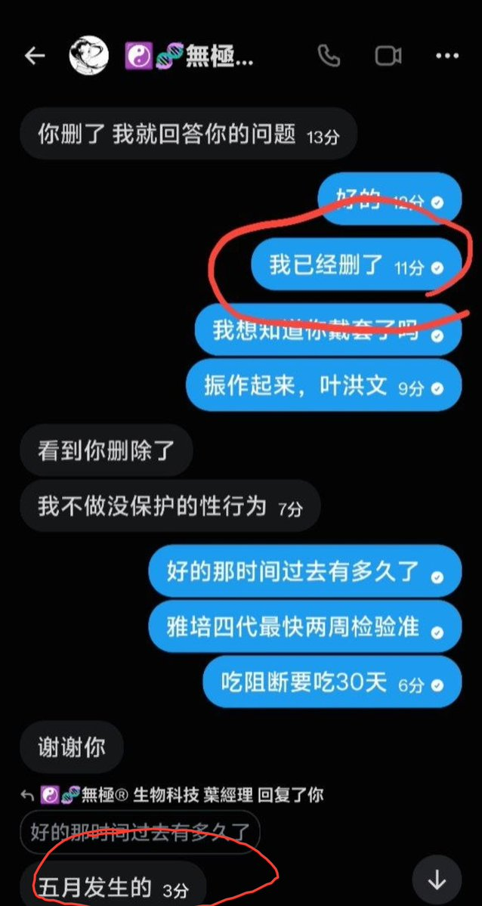
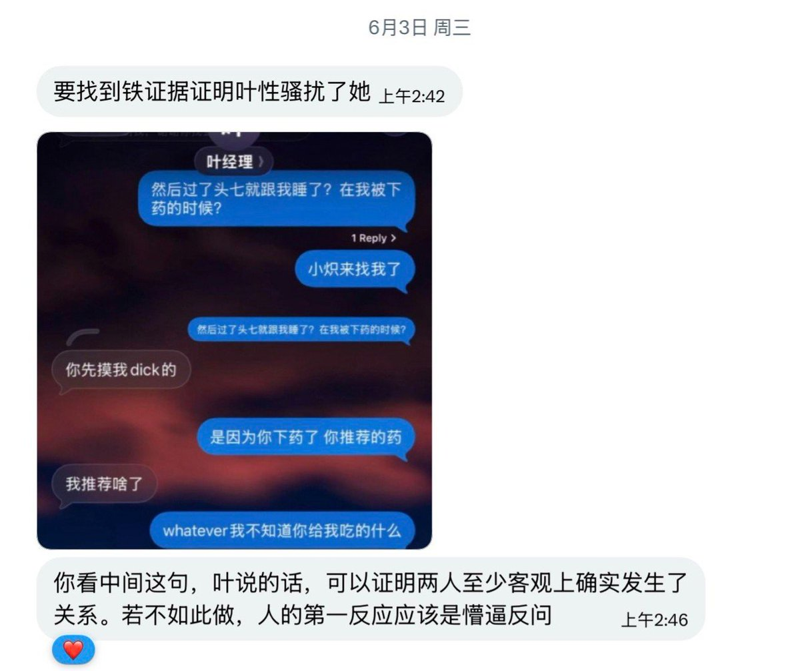

yella Iwase～
@yelai431420
RT @aaronwatson55: OD圈的oder们大家ao，欢迎收看今日的药商丑态!今天带来的事23年的老资历，能把淘宝随便买的1s0卖出惊天高价的叶洪文!
从引用我们看到，叶将开场设为严厉批判女方，试图给观众女方的坏印象。而叶不会读心，如何知道女方因此恨他？所以这不过事…


原料革命自由宣传部
@aaronwatson55
OD圈的oder们大家ao，欢迎收看今日的药商丑态!今天带来的事23年的老资历，能把淘宝随便买的1s0卖出惊天高价的叶洪文!
从引用我们看到，叶将开场设为严厉批判女方，试图给观众女方的坏印象。而叶不会读心，如何知道女方因此恨他？所以这不过事叶的胡编乱造
而真正的缘由便是~叶迷奸了当事人!(证据见图) https://t.co/qbpGIVsSuF https://t.co/ujVeQJ4MgR